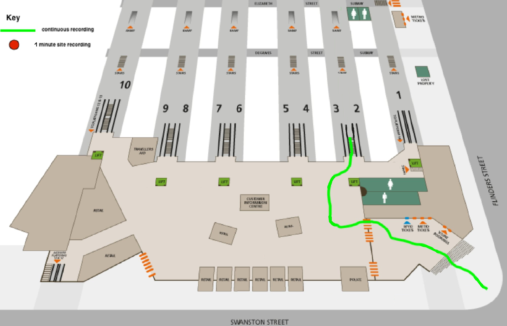

Please choose one location
Use headphone for best experience
Rotating by:Tilting your phone
Watch in VR mode
Drag your mouse
Slide your finger
Rotating by:
Introduction
anlike other multichannel surround formats, its transmission channels do not carry speaker signals. Instead, they contain a speaker-independent representation of a sound field called B-format, which is then decoded to the listener's speaker setup. This extra step allows the producer to think in terms of source directions rather than loudspeaker positions, and offers the listener a considerable degree of flexibility as to the layout and number of speakers used for playback.
Ambisonics was developed in the UK in the 1970s under the auspices of the British National Research Development Corporation.
Despite its solid technical foundation and many advantages, Ambisonics has not been a commercial success, and survived only in niche applications and among recording enthusiasts.
With the easy availability of powerful digital signal processing (as opposed to the expensive and error-prone analog circuitry that had to be used during its early years) and the successful market introduction of home theatre surround sound systems since the 1990s, interest in Ambisonics among recording engineers, sound designer